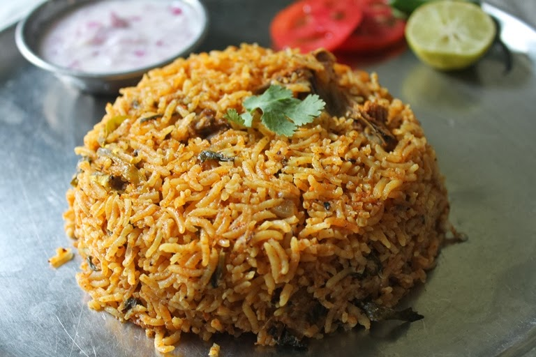

Biryani
Biryani is one of the most loved dish all over the world. Biryani is made with marinated meat like chicken, mutton, fragrant basmati rice, whole spices, coriander leaves, mint leaves, fried onions, fried nuts and raisins and lots of ghee. It has an aroma that is so unique to the authentic biryani.

Incredients
- 1 cup boiled basmati rice
- 1/2 teaspoon mint leaves
- salt as required
- 2 teaspoon virgin olive oil
- 3 green cardamom
- 2 clove
- 2 onion
- 1 teaspoon turmeric
- 1 tablespoon garlic paste
- 1 cup hung curd
- 2 tablespoon coriander leaves
- water as required
- 1 tablespoon ghee
- 600 gm chicken
- 1 tablespoon garam masala powder
- 1 teaspoon saffron
- 1 tablespoon bay leaf
- 1 black cardamom
- 1 teaspoon cumin seeds
- 4 green chillies
- 1 tablespoon ginger paste
- 1 teaspoon red chilli powder
- 1/2 tablespoon ginger
- 2 drops kewra
- 1 tablespoon rose water